by Abraham Kandel
CRC Press, CRC Press LLC
ISBN: 084934297x Pub Date: 11/01/91
|
|
Fuzzy Expert Systems
by Abraham Kandel CRC Press, CRC Press LLC ISBN: 084934297x Pub Date: 11/01/91 |
| Previous | Table of Contents | Next |
A semantic has been defined for clauses weighted by lower bounds of a necessity measure. If p is a closed formula, M(p) the set of the models of p, then the models of (p (N ∝)) will be defined by a fuzzy set M(p (N ∝)) with a membership function:
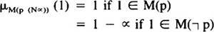
Then the fuzzy set of the models of a knowledge base 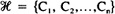, where Ci is a closed formula with its weight, will be the intersection of the fuzzy sets M(Ci), i.e.:
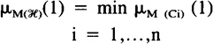
The consistency degree of will be defined by 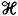; it estimates the degree to which the set of models of is not empty. The quantity 1nc 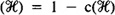 will be called degree of inconsistency of . Finally, we say that 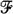 is a logical consequence of if and only if ∀1, 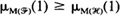. Let us note that all these definitions recover those of classical logic. We shall use the following notations:
Then the following theorems hold:
THEOREM 1
For any necessity-valued clauses C = (C* (N ∝)) and 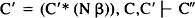 implies 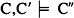, where C″ is a weighted clause.
Proof
We have to prove that 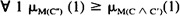.
Q.E.D.
Corollary
Let be a set of necessity-valued clauses, then any necessity-valued clause C derived from is a logical consequence of  , i.e., the resolution principle for necessity-valued clauses is sound.
, i.e., the resolution principle for necessity-valued clauses is sound.
Proof
By induction on the refutation, using Theorem 1.
THEOREM 2
Let be a set of necessity-valued clauses. The  is ∝-inconsistent (∝ > 0) → there is an ∝-refutation from ,, i.e., the resolution principle for necessity-valued clauses is complete for the refutation.
is ∝-inconsistent (∝ > 0) → there is an ∝-refutation from ,, i.e., the resolution principle for necessity-valued clauses is complete for the refutation.
LEMMA 2.1: is ∝-inconsistent
⇔ (;Ø (N ∝)) is a logical consequence of .
Proof
Let us note V∝ = (;Ø (N ∝)).
First, let us notice that ∀ 1, μM(V ∝) (1) = 1 - ∝ (trivial). Then we have 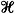 is ∝-inconsistant 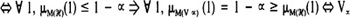 is a logical consequence of .
LEMMA 2.2: V∝ is a logical consequence of 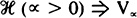 (∝ > 0) ⇒ V∝ is a logical consequence of , where is the subset of the clauses of whose valuation is greater than or equal to (N ∝).
Proof
V ∝ is a logical consequence of
Besides we have 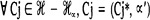 with ∝′ < ∝.Hence μM(Cj)(1) ≥ 1 - ∝′ > 1 - ∝ and 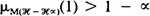 and (A) ⇒ ∀ 1, 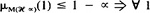, 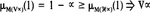 is a logical consequence of 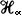
LEMMA 2.3: V∝ is a logical consequence of 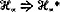 is inconsistent in classical logic, where  is the set of clauses of without their weights.
is the set of clauses of without their weights.
Proof
LEMMA 2.4: (Ø(N ∝)) is a logical consequence of 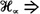 ⇐ there is a (N ∝)-refutation from .
Proof
(Ø (N ∝)) is a logical consequence of 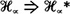 is inconsistent in classical logic (Lemma 2.3)⇐ there is a refutation by resolution form 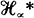 (completeness of the resolution principle in classical first-order logic), and the refutation of using the same clauses (with the associated valuations) has a valuation greater or equal than (N ∝) (since each clause of has a valuation greater than or equal than (N ∝)). The soundness of the resolution principle enables us to say that this refutation cannot have a valuation strictly greater than ∝; besides, a refutation of is also a refutation of so we conclude that there is a (N ∝)-refutation from  .
.
Proof of theorem 2:
is ∝-inconsistent
Q.E.D.
Completeness when possibility-valued clauses are allowed remains a topic for further research. However, the model M(p (Π ∝)) of a possibility-valued clause (p (Π ∝)) should be a fuzzy set with a membership function partially defined by the constraint:
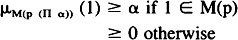
Note that the clauses weighted in terms of possibility have no influence on 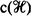.
| Previous | Table of Contents | Next |